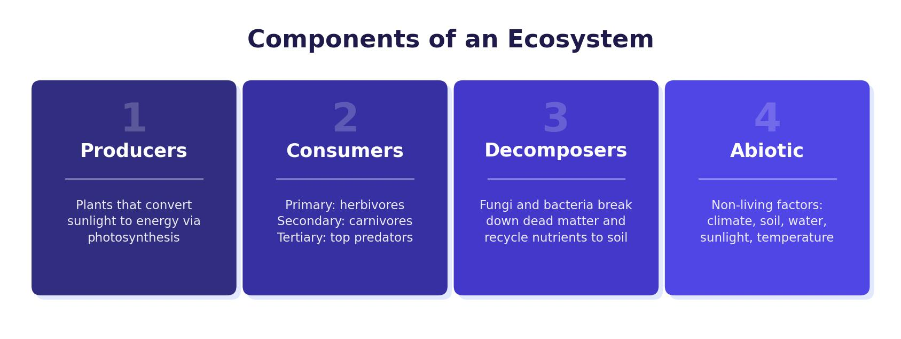

What Is an Ecosystem?
An ecosystem is a community of living organisms interacting with the non-living elements of their environment. Ecosystems can be tiny — like a pond or a hedgerow — or enormous, like a tropical rainforest that stretches across an entire continent.
Every ecosystem is made up of two types of component:
- Biotic components — the living parts, including plants, animals, fungi and bacteria.
- Abiotic components — the non-living parts, such as sunlight, water, temperature, soil and rocks.
Biotic and abiotic components are interdependent — they rely on each other. If one component changes, it affects the whole ecosystem. For example, if rainfall decreases, plants grow less, which means fewer herbivores can survive, which reduces food for predators.

Food Chains and Food Webs
Energy flows through an ecosystem from one organism to the next. A food chain shows this flow in a single line, starting with a producer and moving through consumers:
- Producers — plants that make their own food using energy from the sun through photosynthesis. They are the starting point of every food chain.
- Primary consumers — herbivores that eat producers, such as rabbits or grasshoppers.
- Secondary consumers — carnivores that eat primary consumers, such as foxes or owls.
- Tertiary consumers — top predators that eat secondary consumers.
- Decomposers — organisms like bacteria and fungi that break down dead material and return nutrients to the soil.
In reality, most organisms are part of more than one food chain. A food web shows all of the food chains in an ecosystem and how they connect together. This gives a more accurate picture of feeding relationships.
Why Is Energy Lost in a Food Chain?
Energy is lost at each stage of a food chain. Only about 10% of energy is passed from one level to the next. Energy is lost because:
- Not all parts of an organism are eaten (for example, bones and shells are left behind).
- Energy is used up in movement — hunting prey or searching for food requires significant effort.
- Energy is lost through respiration — organisms use energy simply to stay alive, breathe and maintain body temperature.
- Energy is lost through excretion — waste products carry away unused energy.
The Nutrient Cycle
Nutrients are constantly recycled within an ecosystem. The nutrient cycle works like this:
- Plants absorb nutrients from the soil to grow (this is the biomass store).
- When leaves fall or organisms die, dead material builds up on the ground (this is the litter store).
- Decomposers break down the litter, releasing nutrients back into the soil.
- Plants then absorb these nutrients again, and the cycle continues.
The nutrient cycle has three stores: soil, biomass (living plants and animals), and litter (dead organic material). Nutrients flow continuously between these stores, keeping the ecosystem healthy.
Global Ecosystems
The world contains several large-scale ecosystems called biomes. Each biome has its own characteristic climate, soil, plants and animals. Major global biomes include:
- Tropical rainforests — hot and wet all year, found near the equator, with the highest biodiversity on Earth.
- Hot deserts — very dry (under 250 mm rain per year), found around the tropics of Cancer and Capricorn.
- Temperate deciduous forests — warm summers and cool winters, found in mid-latitudes including the UK.
- Tundra — very cold, found near the poles, with permanently frozen ground (permafrost).
- Grasslands — moderate rainfall, found in the interior of continents.
UK Small-Scale Ecosystem: Epping Forest
Deciduous woodland is the most common natural ecosystem in the UK. Epping Forest is a prime example. It is located in the south-east of England, north-east of London.
Characteristics of Epping Forest
Deciduous woodlands contain trees with broad leaves, such as oak, beech and elm. They thrive in places with high rainfall, warm summers and cooler winters. The key characteristics are:
- Trees shed their leaves in autumn to conserve energy during winter. By mid-autumn, the forest floor is covered with a thick layer of fallen leaves.
- The soil type is brown earth — a fertile soil enriched by decomposing leaves. Earthworms mix the nutrients and blend the layers within the soil.
- Tree roots grow deep, helping to break up the rock below and adding minerals to the soil.
Due to careful management, Epping Forest has a complex food web composed of thousands of species. It has a wide variety of native tree species (beech, elm, oak and ash), many primary consumers (insects, small mammals, deer, and 38 species of birds), secondary consumers such as owls, adders and foxes, and over 700 species of fungi acting as important decomposers. Over 100 lakes and ponds provide essential habitats for numerous animal and plant species.
Nutrient Cycling in Epping Forest
The producers, consumers and decomposers in Epping Forest are all interdependent. This is clearly shown by the annual life cycle of the trees. Deciduous trees shed their leaves in autumn. By spring, the thick layer of fallen leaves has disappeared because decomposers have broken them down. The nutrients stored in the leaves are converted to humus in the soil, ready to support new plant growth. This demonstrates the interdependence of plants, animals and soil.
Human Impacts and Management
Humans impact Epping Forest through activities like littering, tree felling and road building. However, the forest is carefully managed to reduce damage:
- It is designated as a Site of Special Scientific Interest (SSSI), meaning it is a protected environment.
- Six weeks’ notice must be given before any work or tree felling can take place.
- Rubbish bins are placed throughout the forest along footpaths.
- Designated car parking areas reduce damage from vehicles.
- Vegetation is cut back along roads to protect animals from traffic.
- Leaflets from the visitor centre educate visitors on how to use the forest responsibly.
- Cattle have been reintroduced in some areas, as grazing supports the growth of certain plants.
- Conservation volunteers carry out tasks every Sunday, including rubbish clearance, to support biodiversity.
Epping Forest’s nutrient cycle follows a clear annual pattern: leaves fall in autumn (litter), decomposers break them down over winter, nutrients return to the soil, and trees absorb them in spring to fuel new growth. This cycle is what makes the brown earth soil so fertile.